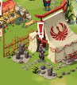
personnage de l'eventC'est un évènement de 23h qui commence vers 10h le vendredi et finit vers 9h le samedi. Il est possible d'y amasser un butin assez important, lié au pillage.
C'est aussi un excellent moyen de se refaire un bon tas de pièces, et faire le plein de ressources de royaumes (fer-charbon-huile-verre).
Le principe de cet évènement est d'attaquer des camps de samouraï, et la cas échéant défendre des attaques provoquées contre des cantons et attaquer des château de Daimyo.
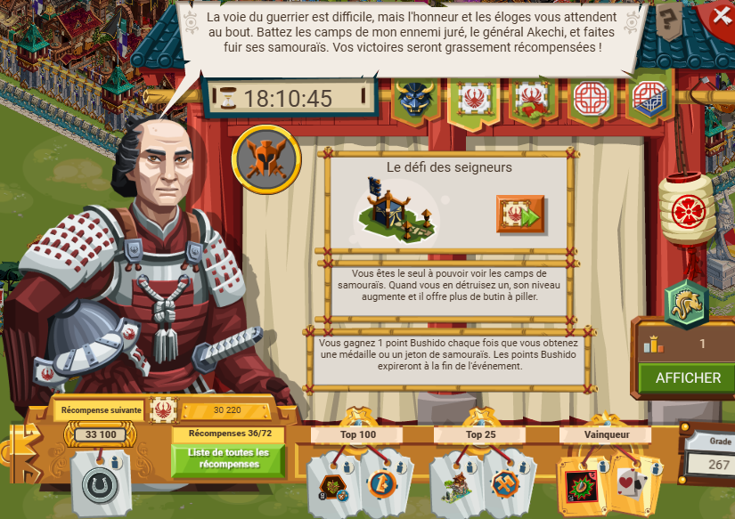
personnage de l'event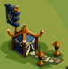
camp samouraïComme pas mal d'event, il y a des niveaux de difficulté :
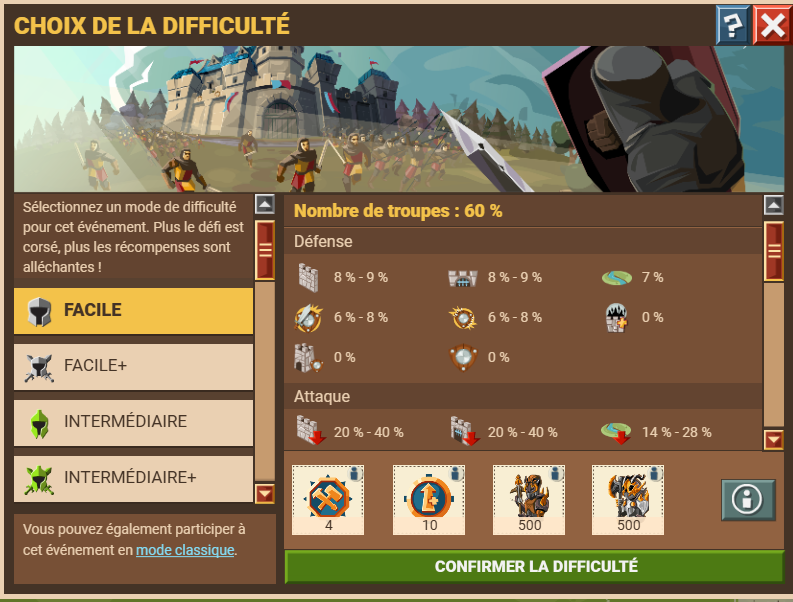
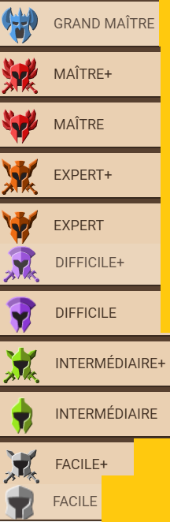
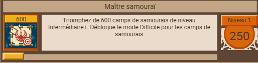
Comme les nomades, le principe est de taper sur des camps, ce qui permet de gagner des pièces ET des ressources (bois, pierres et minerai de fer) En plus des camps, il existe aussi les châteaux de Daimyo dont l’attaque rapporte des ressources « simples » (bois-pierres) et des ressources de royaumes : charbon-huile-verre. En fonction de la difficulté choisie, les camps sont initialisés lvl 31/41/51/61/71/81/91 pour finir 9 lvl au-dessus : si ça a commencé lvl 21, ça va au 30, 81 au 90, etc… Chaque attaque sur un camp le monte d’un niveau. Comme pour d'autres événements, il y a un héraut pour accéder à une boutique de récompense, ainsi qu'un armurier spécifique. Dans le cas de cet événement, il y a l'armurier samouraï qui propose des engins spéciaux "samouraï" qui permettent de collecter plus de jetons en combinant un effet classique et plus de jetons. Un bonus : comme pour les samouraïs, il y a la tirelire contre ressources, ici samouraï. C'est un engin qui permet d'augmenter la quantité de pièces pillées Attaquer un camp de samouraï permet d'obtenir beaucoup de ressources plus pièces grâce au pillage, et en plus des jetons samouraï.Ces jetons peuvent être échangées contre des récompenses diverses :
Canton
Il est possible de provoquer une attaque d'un château de Daimyo. Le défis est alors de défendre le canton, en y envoyant des soldats et des engins. Le baillis pris en compte est celui du CP, ainsi que le généraal assigné. Défendre un canton permet de gagner des pièces. noter qu'il y a sur la carte des cantons de rang 1 à 4, ainsi que des château de Daimyo de rang 1 à 4. Taper un château de Daimyo de rang 1 rapporte du charbon en plus du bois et pierre Taper un château de Daimyo de rang 2 rapporte de l’huile en plus du bois et pierre Taper un château de Daimyo de rang 3 rapporte du verre en plus du bois et pierre Taper un château de Daimyo de rang 4 rapporte ces trois ressources en plus du bois et pierre En plus des ressources et pièces, attaquer des château de Daimyo ou défendre des cantons rapporte des médilles de samouraï. Ces médailles, tout comme les jetons, peuvent être échangé contre des récompenses.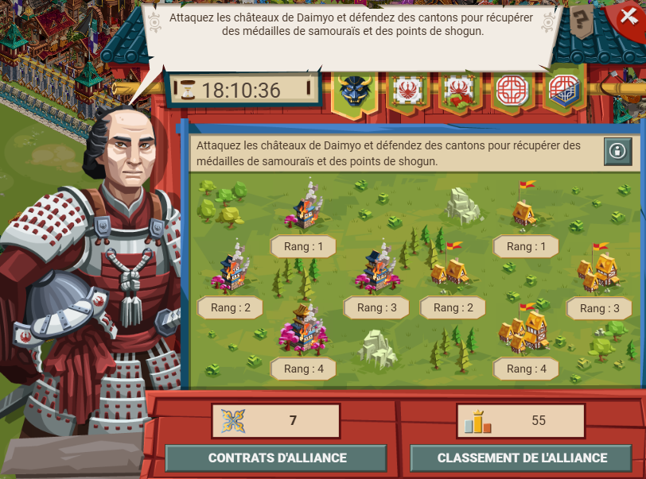
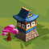
Château de Daimyo
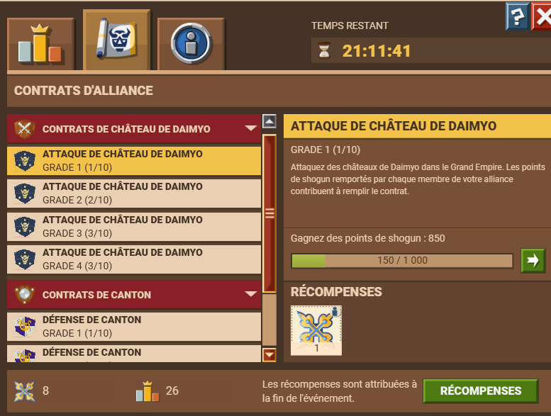
contrat
Faisant partie de l'évènement Légion des Daimyo, les contrats sont répartis par rang (1-4) et type (canton - Daimyo). En gros, il y a :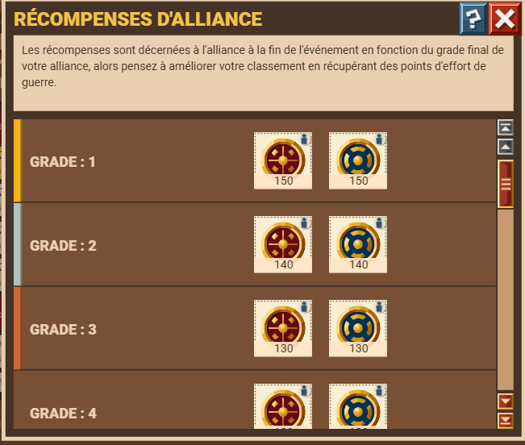
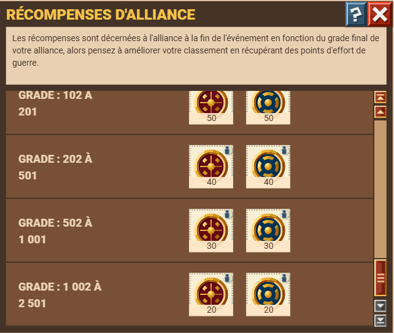
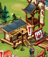
personnage devant le château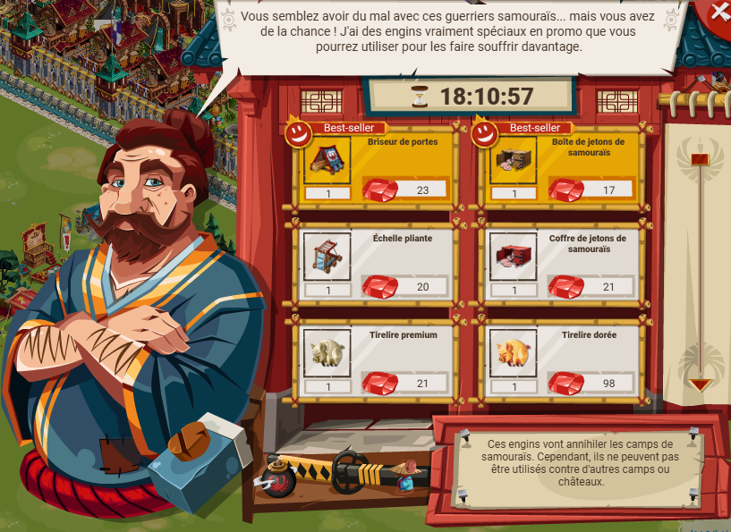
Armurier samouraï Comme l'armurier nomades, il propose des engins spécifiques à cet évènement. Échelles pliantes, briseur de porte, bouclier orientables...Des engins pour éduire la protection du mur, la force des distance et la protection de la porte. Ajouter à ça des engins (coffret de jetons) pour augmenter le nombre de jetons samouraï obtenus à chaque attaque sur un camp. Pour ne pas se ruiner, il suffit d'acheter les engins chez le maître forgeron, avec des pièces d'argent.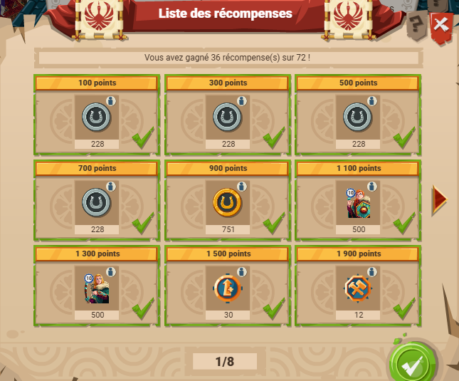
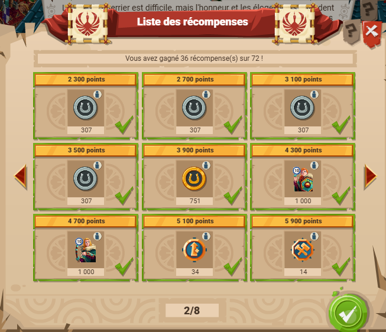
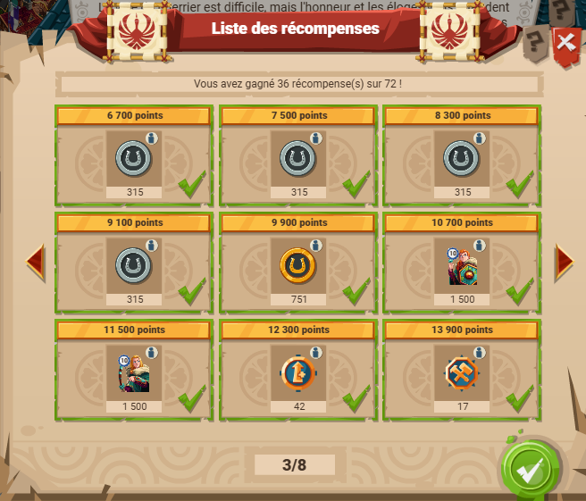
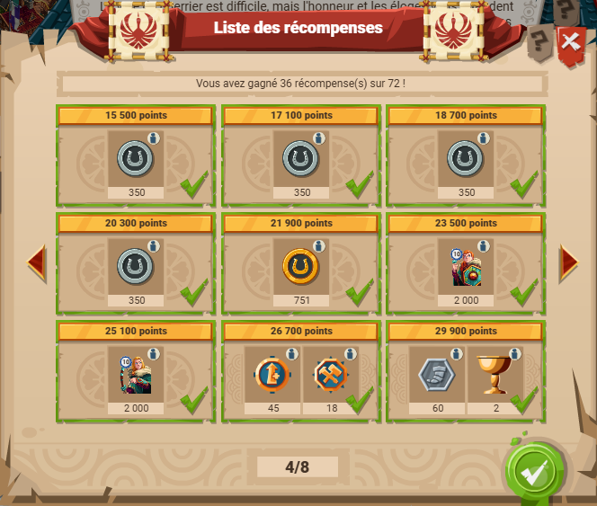
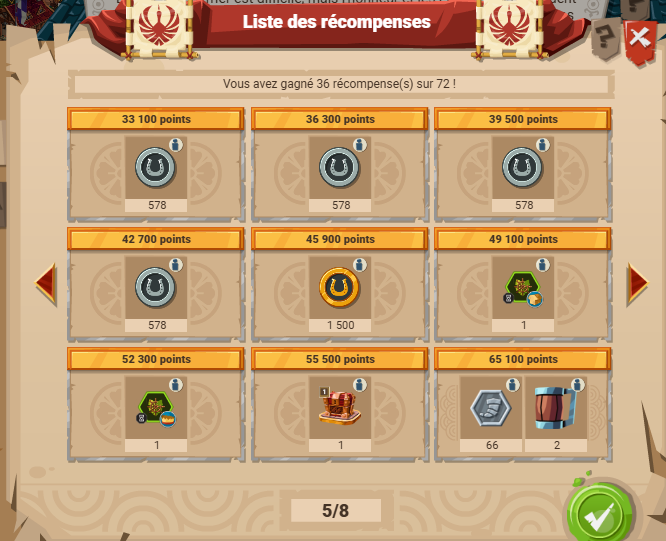
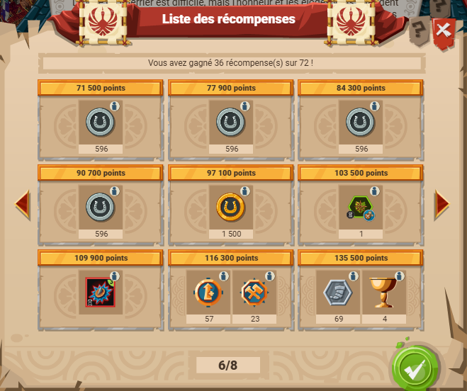
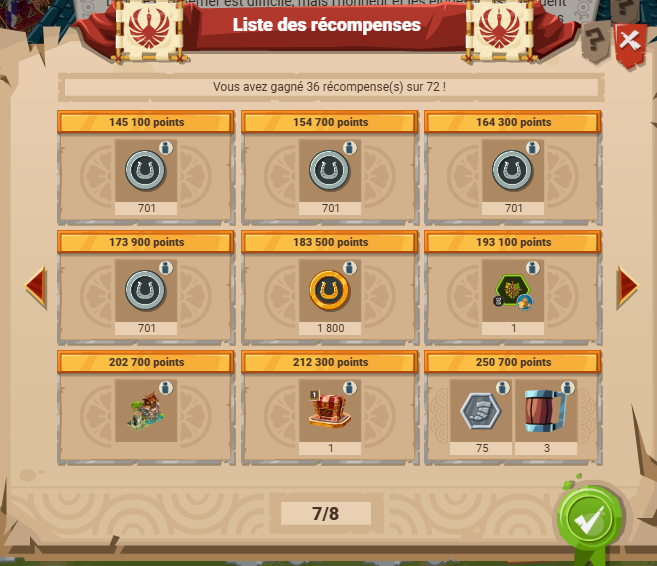
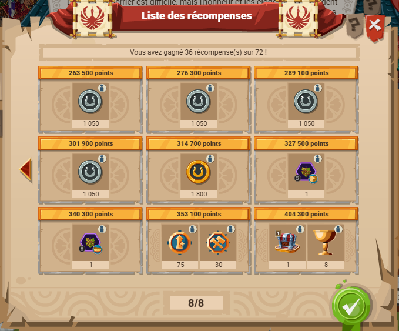
Récompenses Aux récompneses de palier il faut bien sûr ajouter les récompenses de la boutique, où les joueurs peuvent échanger des jetons contre des récompenses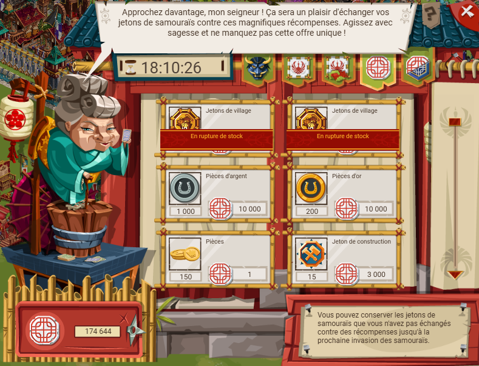
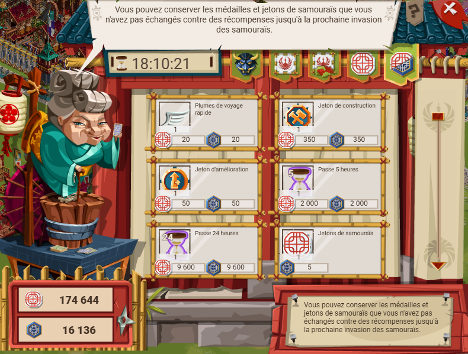